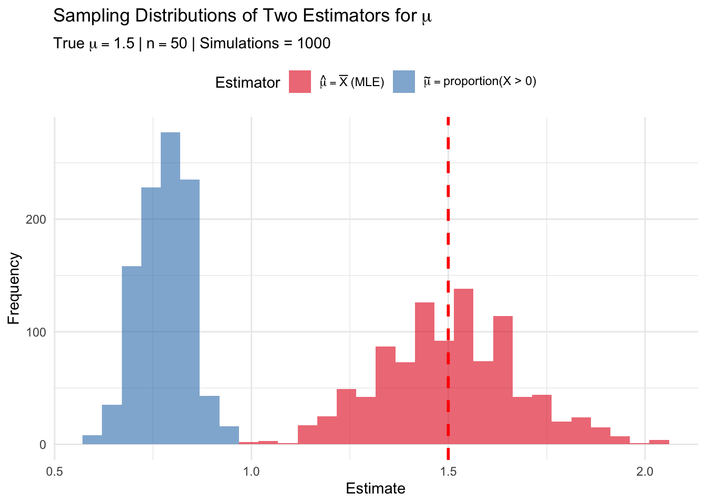

A clinical trial is testing a new treatment for hypertension. The time (in days) until a patient achieves target blood pressure is modeled as an Exponential distribution with rate parameter \(\lambda\) (where \(E(X) = 1/\lambda\)).
In a pilot study, the following times (in days) were observed for \(n = 8\) patients: \[X = \{12, 8, 15, 6, 10, 14, 9, 11\}\]
Part (a)
Calculate the Fisher Information \(I(\lambda)\) for a single observation from an Exponential(\(\lambda\)) distribution. Show your derivation using the definition \(I(\lambda) = E[-\ell''(\lambda)]\).
For \(X \sim \text{Exponential}(\lambda)\), the pdf is \(f(x; \lambda) = \lambda e^{-\lambda x}\) for \(x > 0\).
Log-likelihood for a single observation:\[\ell(\lambda) = \ln f(x; \lambda) = \ln \lambda - \lambda x\]
First derivative:\[\ell'(\lambda) = \frac{1}{\lambda} - x\]
Second derivative:\[\ell''(\lambda) = -\frac{1}{\lambda^2}\]
Note: Since the second derivative does not depend on \(X\), the expectation is straightforward.
Part (b)
State the Cramér-Rao Lower Bound (CRLB) for unbiased estimators of \(\lambda\) based on a sample of size \(n\).
For \(n\) observations, the Fisher Information is: \[I_n(\lambda) = n \cdot I(\lambda) = \frac{n}{\lambda^2}\]
The Cramér-Rao Lower Bound for unbiased estimators of \(\lambda\) is: \[\boxed{\text{CRLB} = \frac{1}{I_n(\lambda)} = \frac{\lambda^2}{n}}\]
Part (c)
The MLE of \(\lambda\) is \(\hat{\lambda} = 1/\bar{X}\). This estimator is biased. Find an unbiased estimator of \(\lambda\) and compute its variance. Does this unbiased estimator achieve the CRLB?
[JM NOTE: Apologies! I meant to give you the “hint” about the distribution of 1/Y used below and only realized I hadn’t put it in the question when one of you asked me a question about it. Note that \(\bar{X}\) is unbiased for \(1/\lambda\) but \(1/\bar{X}\) is not unbiased for \(\lambda\) since \(g(x) = 1/x\) is a convex function.]
For Exponential(\(\lambda\)), we have \(\sum_{i=1}^n X_i \sim \text{Gamma}(n, \lambda)\).
Using properties of the Gamma distribution, for \(Y \sim \text{Gamma}(n, \lambda)\): \[E\left(\frac{1}{Y}\right) = \frac{\lambda}{n-1} \quad \text{for } n > 1\]
Comparison with CRLB:\[\text{Var}(\hat{\lambda}_U) = \frac{\lambda^2}{n-2} > \frac{\lambda^2}{n} = \text{CRLB}\]
The unbiased estimator does NOT achieve the CRLB.
Part (d)
Using R, compute the MLE \(\hat{\lambda}\) from the pilot study data. Also compute the CRLB at this estimated value. Interpret what this bound tells us about estimation precision.
# Pilot study databp_times <-c(12, 8, 15, 6, 10, 14, 9, 11)n <-length(bp_times)# MLElambda_mle <-1/mean(bp_times)# Unbiased estimatorlambda_unbiased <- (n -1) /sum(bp_times)# CRLB at the MLE estimatecrlb <- lambda_mle^2/ ncat("Sample size: n =", n, "\n")
Sample size: n = 8
cat("Sample mean:", mean(bp_times), "days\n")
Sample mean: 10.625 days
cat("MLE of λ:", round(lambda_mle, 4), "per day\n")
MLE of λ: 0.0941 per day
cat("Unbiased estimate of λ:", round(lambda_unbiased, 4), "per day\n")
Interpretation: The CRLB tells us that no unbiased estimator of \(\lambda\) can have variance smaller than 0.001107. This means the standard error of any unbiased estimator must be at least 0.0333. Our estimate of \(\lambda \approx\) 0.0941 per day (corresponding to a mean time of 10.6 days) has inherent uncertainty—we can expect our estimates to vary by roughly ±0.067 across repeated samples of this size.
Problem 2: Method of Moments (Shifted Exponential Distribution)
The time (in hours) from hospital admission to discharge for patients undergoing a minor outpatient procedure can be modeled with a shifted (two-parameter) Exponential distribution. This accounts for a minimum required observation time \(\theta\) plus additional random waiting time. The pdf is: \[f(x; \lambda, \theta) = \lambda e^{-\lambda(x - \theta)}, \quad x \geq \theta, \quad \lambda > 0, \quad \theta > 0\]
For this distribution: \[E(X) = \theta + \frac{1}{\lambda}, \quad \text{Var}(X) = \frac{1}{\lambda^2}\]
Part (a)
Derive the Method of Moments estimators \(\tilde{\lambda}\) and \(\tilde{\theta}\) in terms of the sample mean \(\bar{X}\) and sample standard deviation \(S\).
For the shifted Exponential distribution, the population moments are: \[E(X) = \theta + \frac{1}{\lambda}, \quad E(X^2) = \text{Var}(X) + [E(X)]^2 = \frac{1}{\lambda^2} + \left(\theta + \frac{1}{\lambda}\right)^2\]
Method of Moments: Set population moments equal to sample moments.
First moment equation:\[E(X) = \bar{X}\]\[\theta + \frac{1}{\lambda} = \bar{X} \quad \quad (1)\]
Second moment equation:\[E(X^2) = \frac{1}{n}\sum_{i=1}^n X_i^2\]
It is easier to work with the variance. Recall that \(\text{Var}(X) = E(X^2) - [E(X)]^2\), so: \[E(X^2) - [E(X)]^2 = \frac{1}{n}\sum_{i=1}^n X_i^2 - \bar{X}^2\]
The left side is \(\text{Var}(X) = \frac{1}{\lambda^2}\), and the right side is the sample variance (with \(n\) in denominator): \[\frac{1}{\lambda^2} = \frac{1}{n}\sum_{i=1}^n X_i^2 - \bar{X}^2 = \frac{1}{n}\sum_{i=1}^n (X_i - \bar{X})^2 \quad \quad (2)\]
Note that the sample standard deviation is \(S = \sqrt{\frac{1}{n-1}\sum(X_i - \bar{X})^2}\), so: \[\frac{1}{n}\sum_{i=1}^n (X_i - \bar{X})^2 = \frac{n-1}{n}S^2\]
Substituting into equation (2): \[\frac{1}{\lambda^2} = \frac{n-1}{n}S^2 \quad \quad (3)\]
Solving the system:
Step 1: From equation (3), solve for \(\lambda\): \[\frac{1}{\lambda^2} = \frac{n-1}{n}S^2 \implies \lambda = \sqrt{\frac{n}{n-1}} \cdot \frac{1}{S}\]
Using R, calculate the MME estimates \(\tilde{\lambda}\) and \(\tilde{\theta}\). Verify that your estimate of \(\theta\) is less than the minimum observed value.
# Discharge times (hours)discharge_times <-c(3.2, 4.1, 2.8, 5.3, 3.5, 4.8, 3.1, 6.2, 4.4, 3.9)n <-length(discharge_times)# Sample statisticsxbar <-mean(discharge_times)s <-sd(discharge_times) # This is S with (n-1) denominator# Method of Moments estimates (exact formulas)lambda_mme <- (1/s) *sqrt(n / (n -1))theta_mme <- xbar - s *sqrt((n -1) / n)cat("Sample size: n =", n, "\n")
cat(" Estimated mean additional wait time (1/λ):", round(1/lambda_mme, 2), "hours\n")
Estimated mean additional wait time (1/λ): 1.02 hours
cat(" Estimated total mean discharge time:", round(theta_mme +1/lambda_mme, 2), "hours\n")
Estimated total mean discharge time: 4.13 hours
cat(" (Check: this should equal x̄ =", round(xbar, 2), "hours)\n")
(Check: this should equal x̄ = 4.13 hours)
Interpretation: The MME estimates suggest that patients require a minimum of approximately 3.11 hours of observation, with an additional expected random waiting time of 1.02 hours before discharge. The validity check confirms that \(\tilde{\theta}\) is less than the smallest observed discharge time (2.8 hours), which is necessary for the model to be consistent with the data.
Problem 3: Maximum Likelihood Estimation (Devore 7.25)
Let \(X_1, X_2, \ldots, X_n\) be a random sample from a distribution with pdf: \[f(x; \theta) = (\theta + 1)x^\theta, \quad 0 \le x \le 1, \quad \theta > -1\]
Part (a)
Derive the maximum likelihood estimator \(\hat{\theta}\) of \(\theta\).
Use the invariance property of MLEs to find the MLE of \(\tau(\theta) = \frac{\theta + 1}{\theta + 2}\), which represents \(E(X)\) for this distribution.
By the invariance property of MLEs, the MLE of \(\tau(\theta) = g(\theta)\) is \(\hat{\tau} = g(\hat{\theta})\).
cat("Sample mean (for comparison):", round(mean(x), 4), "\n")
Sample mean (for comparison): 0.878
Note: The MLE of \(E(X)\) (0.8833) is close to but not exactly equal to the sample mean (0.878). This is expected since the MLE uses the full likelihood structure of the distribution.
Problem 4: Sufficient Statistics (Medical Application)
A researcher is studying the number of adverse events reported per patient in a drug trial. The number of adverse events \(X\) follows a Poisson(\(\mu\)) distribution.
Part (a)
For a random sample \(X_1, \ldots, X_n\) from Poisson(\(\mu\)), use the Neyman Factorization Theorem to show that \(T = \sum_{i=1}^n X_i\) is a sufficient statistic for \(\mu\).
For \(X_1, \ldots, X_n \stackrel{iid}{\sim} \text{Poisson}(\mu)\), the joint pmf is:
We can factor this as: \[f(x_1, \ldots, x_n; \mu) = \underbrace{e^{-n\mu} \mu^{\sum x_i}}_{g(T; \mu)} \cdot \underbrace{\frac{1}{\prod_{i=1}^n x_i!}}_{h(x_1, \ldots, x_n)}\]
where \(T = \sum_{i=1}^n X_i\).
\(g(T; \mu) = e^{-n\mu} \mu^T\) depends on the data only through\(T\) and involves \(\mu\)
\(h(x_1, \ldots, x_n) = 1/\prod x_i!\) depends only on the data, not on\(\mu\)
By the Neyman Factorization Theorem, \(T = \sum_{i=1}^n X_i\) is sufficient for \(\mu\). \(\square\)
Part (b)
Show that the MLE \(\hat{\mu} = \bar{X}\) is a function of the sufficient statistic \(T\).
The MLE is: \[\hat{\mu} = \bar{X} = \frac{1}{n}\sum_{i=1}^n X_i = \frac{T}{n}\]
Since \(\hat{\mu} = T/n\), the MLE can be written purely as a function of the sufficient statistic \(T\). \(\checkmark\)
Part (c)
In a clinical trial with \(n = 50\) patients, suppose the following summary statistics are recorded: \[\sum_{i=1}^{50} X_i = 72\]
A colleague suggests using a different estimator: \(\tilde{\mu} = \frac{\text{number of patients with } X_i > 0}{n}\).
Using R simulation, generate 1000 samples from Poisson(\(\mu = 1.5\)) with \(n = 50\) and compare the bias, variance and MSE of \(\hat{\mu}\) and \(\tilde{\mu}\).
[JM side note: You don’t need to use map() functions like I do, unless you want to learn them! Feel free to make this work however you know you to make tibbles (stack, make each vector separately, whatever).]
# Visualizationsim_results |>pivot_longer(cols =c(mu_hat, mu_tilde), names_to ="Estimator", values_to ="Estimate") |>mutate(Estimator =factor(Estimator, levels =c("mu_hat", "mu_tilde"),labels =c("MLE", "Proportion"))) |>ggplot(aes(x = Estimate, fill = Estimator)) +geom_histogram(alpha =0.6, bins =30, position ="identity") +geom_vline(xintercept = mu_true, linetype ="dashed", color ="red", linewidth =1) +labs(title =bquote("Sampling Distributions of Two Estimators for"~ mu),subtitle =bquote("True"~ mu == .(mu_true) ~"|"~ n == .(n) ~"| Simulations ="~ .(n_sims)),x ="Estimate", y ="Frequency") +scale_fill_brewer(palette ="Set1",labels =c(expression(hat(mu) ==bar(X) ~"(MLE)"),expression(tilde(mu) =="proportion(X > 0)"))) +theme_minimal() +theme(legend.position ="top")

Interpretation:
The MLE \(\hat{\mu} = \bar{X}\) is essentially unbiased with bias ≈ 0 and estimates \(\mu\) directly.
The proportion estimator \(\tilde{\mu}\) is heavily biased because it estimates \(P(X > 0) = 1 - e^{-\mu} \approx\) 0.777, not \(\mu\) itself.
Even though \(\tilde{\mu}\) has smaller variance, its large bias results in much larger MSE.
The MLE, which is based on the sufficient statistic \(T = \sum X_i\), is clearly superior for estimating \(\mu\).
Problem 5: MLE for Normal Variance (Devore 7.31 Modified)
Measurement errors in a laboratory instrument are assumed to follow a Normal distribution with known mean \(\mu = 0\) and unknown variance \(\sigma^2\). A sample of \(n\) measurements yields observations \(X_1, \ldots, X_n\).
Part (a)
Derive the MLE of \(\sigma^2\).
For \(X_i \stackrel{iid}{\sim} N(0, \sigma^2)\), the pdf is: \[f(x; \sigma^2) = \frac{1}{\sqrt{2\pi\sigma^2}} e^{-x^2/(2\sigma^2)}\]
Note: In this special case where \(\mu = 0\) is known, the MLE \(\hat{\sigma}^2 = \frac{1}{n}\sum X_i^2\) is already unbiased. This is different from the usual case where \(\mu\) is unknown, in which case the MLE \(\frac{1}{n}\sum(X_i - \bar{X})^2\) is biased and we use \(\frac{1}{n-1}\sum(X_i - \bar{X})^2\) for an unbiased estimate.